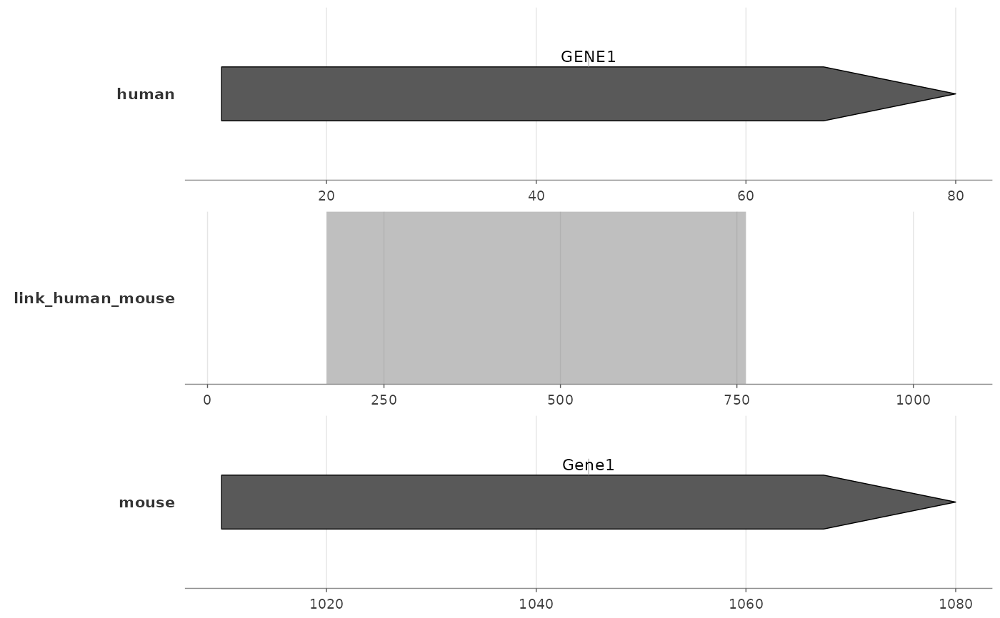

theme_ggexon_pairwise() provides compact styling for a top annotation
panel, a middle linkage panel, and a bottom annotation panel. It hides the
annotation y axes and places horizontal facet-label styling on the left
without drawing strip-background bars. It inherits the shared background
contract through theme_ggexon_track().
Usage
theme_ggexon_pairwise(
base_size = 8,
base_family = "",
show_x_axis = TRUE,
show_x_grid = TRUE,
show_legend = FALSE
)Arguments
- base_size
Base font size passed to
ggplot2::theme_minimal().- base_family
Base font family passed to
ggplot2::theme_minimal().- show_x_axis
Logical; show x-axis labels, ticks, and axis line.
- show_x_grid
Logical; show major x grid lines.
- show_legend
Logical; keep the legend. Defaults to
FALSE.
Details
The facet controls the actual strip position and annotation alignment. Pair
this theme with
facet_genomics(strip.position = "left", vertical = "center").
Examples
tracks <- c("human", "link_human_mouse", "mouse")
genes <- data.frame(
track = factor(c("human", "mouse"), levels = tracks),
xmin = c(10, 1010),
xmax = c(80, 1080),
y = 1,
strand = "+",
gene = c("GENE1", "Gene1")
)
links <- data.frame(
track = factor("link_human_mouse", levels = tracks),
tspecies = "human", tchr = "chr1", tstart = 20, tend = 60,
strand = "+",
qspecies = "mouse", qchr = "chr1", qstart = 1020, qend = 1060,
group = 1
)
ggexon() +
geom_genetag(data = genes, label_position = "outside") +
geom_synteny_link(
data = links,
ggplot2::aes(
tspecies = tspecies, tchr = tchr, tstart = tstart, tend = tend,
strand = strand,
qspecies = qspecies, qchr = qchr, qstart = qstart, qend = qend,
group = group
),
inherit.aes = FALSE
) +
facet_genomics(
ggplot2::vars(track),
ncol = 1,
scales = "free_x",
strip.position = "left",
link_axis = "none",
link_strip = "blank",
annotation_axis = "bottom",
vertical = "center"
) +
theme_ggexon_pairwise()
